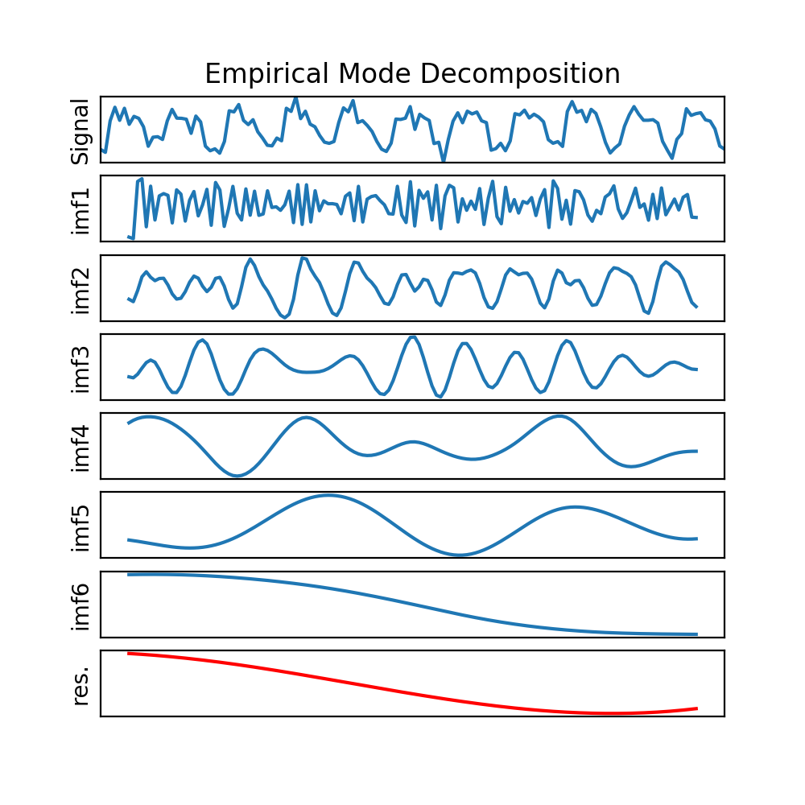
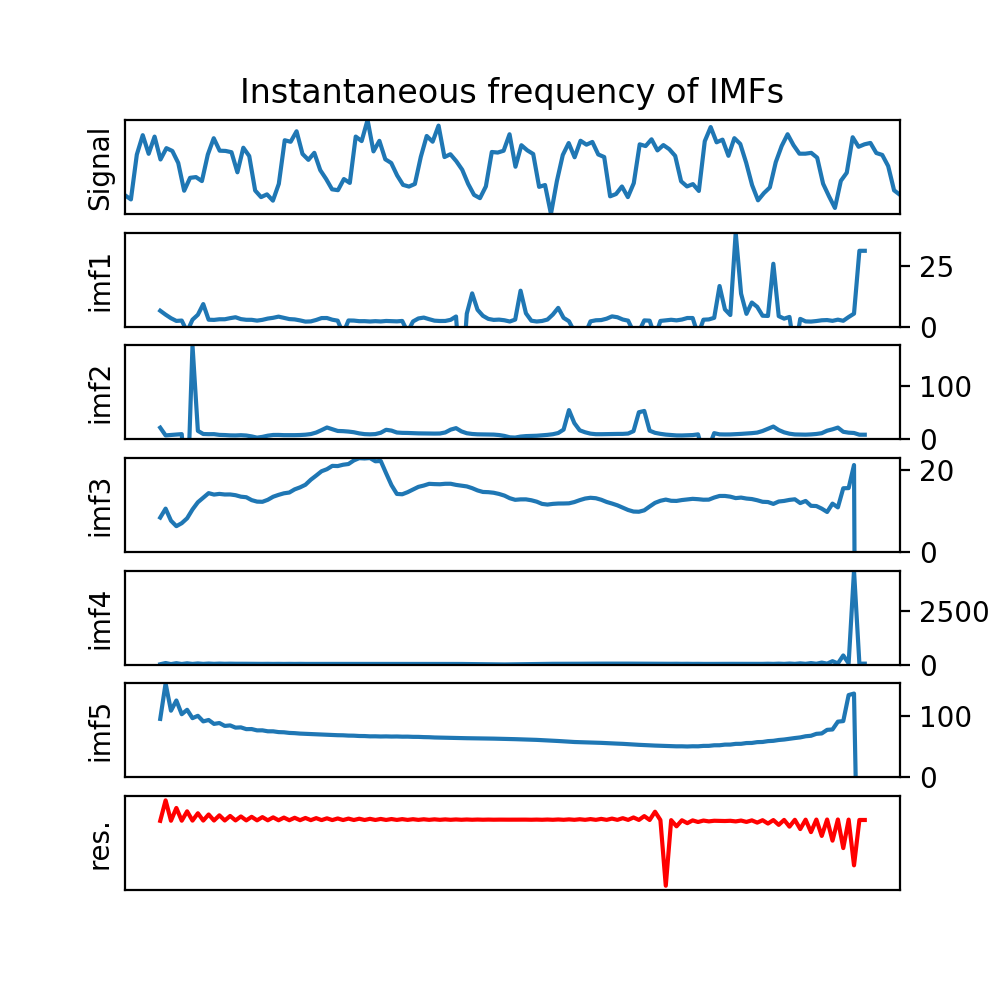

Welcome to PyHHT’s documentation!¶
This is a small application for the Hilbert Huang Transform(HHT) Spectrum based on Python.
Actually, the MATLAB version is well written for HHT, but there is no Python version for the implement of HHT spectrum, which triggers me to write this. Hope this will help the people who need it.
Requirements:¶
Required packages to run this program (tested on Debian Wheezy):
netCDF4
python-numpy
matplotlib
scipy
pyEMD
Details:¶
Contents:
The following contents contain one example of the hht spectrum.
from netCDF4 import Dataset
from hht import hht
import matplotlib.pyplot as plt
import numpy as np
f = Dataset('./source/obs.nc')
fsh = f.variables['FSH']
time = f.variables['time']
one_site = np.ma.masked_invalid(fsh[0,:])
time = time[~one_site.mask]
data = one_site.compressed()
hht(data, time)
The EMD and Instance frequency can always be autogenerated.
 